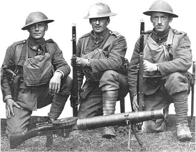

|
JANVIER Le Corps canadien prend position sur la
portion de front s'étendant de Saint-Eloi (France) au Bois de
Ploegsteert (Belgique), où il passe un hiver lugubre.
 L'unité de Charles est
à Houplines, en France, tout près de la frontière
belge, au nord-ouest d'Armentières. Le temps est
généralement sombre et pluvieux. Les hommes pataugent dans la
boue. Presque chaque jour son unité d'artillerie tire une
centaine de salves sur différentes cibles. Seule la brume peut
empêcher les tirs.
Les Canadiens portent pour la première fois le nouveau casque
d'acier, conçu pour protéger les soldats des éclats des
obus car les blessures à la tête sont la cause de nombreuses
pertes sur le champ de bataille. La mitrailleuse Lewis
vient s'ajouter à l'armement des soldats. (sur
la photo ci-contre, le sac porté en avant sur la poitrine
contient le masque à gaz)
FÉVRIER
Les tirs sont plus légers, certains jours il n'y en a même
pas, surtout quand les vents sont trop forts. Le 16 février les
canons se retrouvent sous l'eau, on les déménage vers une
position plus haute.
LE 28 FÉVRIER 1916, CHARLES A 23 ANS. Le temps
est beau et frais,
Charles est soldat
depuis plus de vingt mois, et n'a eu aucun congé encore.
 Bien sûr Charles n'est pas toujours au combat. Habituellement
il y a une rotation, soit quatre jours au front, quatre jours dans la tranchée de
communication, en soutien direct si nécessaire, et
quatre jours à
l'arrière des lignes. Charles peut alors manger de meilleurs repas, se
nettoyer, se reposer, écrire son courrier. Les soldats jouent
aux cartes. Bien sûr Charles n'est pas toujours au combat. Habituellement
il y a une rotation, soit quatre jours au front, quatre jours dans la tranchée de
communication, en soutien direct si nécessaire, et
quatre jours à
l'arrière des lignes. Charles peut alors manger de meilleurs repas, se
nettoyer, se reposer, écrire son courrier. Les soldats jouent
aux cartes.
Un groupe forme le
"Dumbells Concert Party". Ils offrent des spectacles comiques
qui font les délices des troupes.
Même derrière les lignes les soldats ont
des séances d'entraînement et des
corvées, mais, ils peuvent aussi visiter d'autres unités ou le
village
avoisinant. Après
avoir touché leur paie, ils se rendent dans des estaminets tenus
par des civils, de petits restaurants où l'on sert généralement des œufs poêlés, des frites et de la
bière diluée.
Malgré tout, ces quelques jours à l'arrière du front
ne sont pas des vacances, les tirs résonnent, les camarades échangent leur vécu, le focus est toujours tourné vers la guerre.
MARS
Les tirs légers se poursuivent chaque jour. Au milieu de mois,
Houplines est bombardé. Les 30 et 31 mars la 1st Canadian Heavy
Battery, divisée en deux sections, bouge vers le nord,
traverse la frontière belge, vers une nouvelle position à l'ouest
d'Ypres. Les Canadiens y combattent dans
différents assauts, le but étant de tenir les allemands
occupés pendant que les britanniques préparent la bataille de
la Somme. L'armée française ayant été
décimée à Verdun en février, une plus grande part du fardeau
de l'effort de guerre repose dès lors sur les épaules
britanniques.
AVRIL
Les tirs sont modérés, sauf quelques jours dans le mois où le
tir est plus nourri.
PREMIÈRE HOSPITALISATION DE CHARLES
 Le 30 avril Charles est
envoyé à l'hôpital de campagne #3,
c'est-à-dire des tentes montées à Wippenhoek, près de
Steenvoorde. Même si cet hôpital est à l'arrière du
front, des bombes de gaz explosent plusieurs fois dans les
environs immédiats. Charles est rapidement transféré à
l'hôpital de campagne #2.
Ce dernier se trouve alors dans une maison réquisitionnée à Vzamertingne,
le Bedford House. On y soigne alors vingt-neuf blessés et
vingt-sept malades,
dont Charles. Le 30 avril Charles est
envoyé à l'hôpital de campagne #3,
c'est-à-dire des tentes montées à Wippenhoek, près de
Steenvoorde. Même si cet hôpital est à l'arrière du
front, des bombes de gaz explosent plusieurs fois dans les
environs immédiats. Charles est rapidement transféré à
l'hôpital de campagne #2.
Ce dernier se trouve alors dans une maison réquisitionnée à Vzamertingne,
le Bedford House. On y soigne alors vingt-neuf blessés et
vingt-sept malades,
dont Charles.
Selon son dossier médical, il souffre de
"Cervical Adenitis A229". Il faut savoir
que les maladies ou les blessures sont identifiées par des
numéros dans les rapports officiels, et les statistiques qui en
découlent, ceci afin de se protéger contre les espions. (
Selon une recherche dans Google: "Cervical
Adenitis is a bacterial infection of the lymph nodes of the neck"
cette maladie se soigne aujourd'hui avec des antiobiotiques,
mais ils n'existaient pas en 1916, alors ? )
MAI
Le 11 mai Charles rejoint son unité, ayant obtenu son congé de
l'hôpital. À son retour,
la situation est encore la même, soit des tirs légers chaque
jour. Le 16 mai, la section droite change de position
parce qu'elle est constamment bombardée. Le 30 mai, aucun
tir, on se prépare à bouger. À midi, l'unité avance au sud
jusqu'à Neuf Berquin. Le lendemain, on continue la marche pour
arriver en fin d'après-midi près de Bully Grenay. Les
canons sont prêts dès le début de la soirée à bombarder la
Crête de Vimy.
JUIN Du
1er au 14 juin l'unité lance des tirs nourris, en moyenne plus
de 300 par jour, et dont plus de 900 salves le 2 juin. À la
mi-juin, le 1st Canadian Heavy Battery est détaché du
Corps Canadien, il reçoit l'ordre de rejoindre d'autres unités
d'artillerie britanniques dans la région de la Somme.
Dans la
nuit du 15 juin l'unité de Charles se met "out of
action" et rejoint les lignes de chevaux, à
l'arrière. On se prépare à bouger, mais, cette fois-ci, en
train car le trajet est long.
Le voyage prend plus de 12 heures,
l'unité arrive à la gare d'Amiens dans la fin
d'après-midi du 16 juin. Quelques heures plus tard, elle se met
en route vers sa nouvelle position. Les hommes et les canons
sont en place dès la fin d'après-midi du 17 juin. La batterie
de Charles est maintenant dans le 23e Horse Artillery Group
XV Corps.
On calibre les canons
par quelques tirs, puis, durant la dernière semaine de juin, on
lance des tirs nourris sur les tranchées ennemies, dont 776
salves le 26 juin, 880 salves le 27 juin, 928 salves le 28 juin,
et 558 salves le 29 juin... Une cadence infernale... Mais
ce n'est que le début...
|